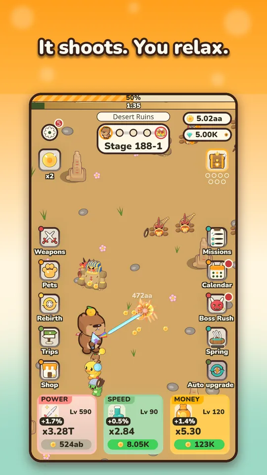
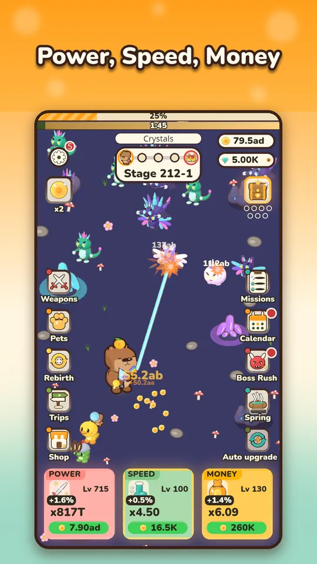
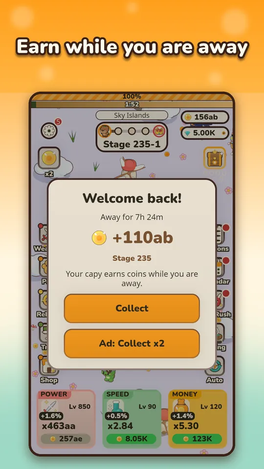

If you just installed Capy Kingdom and want a few Capy Kingdom beginner tips, here is the short version from the person who built it: you cannot really break anything, and the game is happy to run without you. Still, a handful of habits will make your first day smoother. I am Maurice, the solo developer, and these are the things I tell friends when they ask where to start.
Understand what the game does for you
Capy Kingdom is an idle shooter you play with one thumb. Your hero capybara and its pets aim and fire automatically, so there is no aiming and no dodging. Your job is to decide where the coins go. If you want the wider picture of the genre first, I wrote a separate piece on how idle shooters work on Android.

Tip 1: Use the three upgrade cards
At the bottom of the screen you will see three big cards: Power, Speed and Money. Power makes your shots hit harder. Speed makes the capybara run faster between fights. Money increases the coins you earn. You can buy one level at a time or in bulk with x10, x100 or Max.
- Early on, buy a little of everything so no card falls far behind.
- When a boss is in your way, lean on Power.
- When you are about to leave the game for a while, a few Money levels pay back while you are away.
I go deeper on ordering in what to upgrade first, so you do not have to memorize it all now.

Tip 2: Do not fear the boss
Every stage has 5 steps, and the fifth is a boss with a timer. Boss fights are where new players worry, so here is the rule: losing costs you nothing. If the boss wins, you drop back to farm the step before it. You keep your coins, you keep earning, and the game shows how much stronger you need to be. You will never be stuck in a way that needs a restart.
There is one more detail worth knowing. Each stage also has a time limit for all five steps together, and it starts at 45 seconds. If it runs out, the run falls back to the first step of that stage with the lane cleared and a fresh clock, and no currency is lost. So a failed attempt is just a short detour.
Tip 3: Equip your first weapon and pet right away
Items you get from crates and eggs do nothing while they sit in your collection. Open the Weapons and Pets screens, drag one item into an equipped slot and leave it there. Locked and equipped items are protected from merges, so you cannot lose them by accident, and big merges ask for confirmation first.
The odds of every crate and egg are shown before you open it, so there are no surprises. Merging is the long-term way to make your collection stronger, and I explain how to use it in the upgrade order article.
Tip 4: Let the kingdom earn while you are away
Close the game and your kingdom keeps paying. When you come back, a Welcome back screen shows how long you were away and how many coins you earned. Offline earnings are capped at 8 hours at the start, so checking in once or twice a day is plenty.

The ad button on that screen is optional. Watching a rewarded ad doubles the collection, but you can always just tap Collect.
Tip 5: Build a two-minute daily routine
You do not need long sessions. A good short loop looks like this:
- Collect your offline coins and spend them on the upgrade cards.
- Claim the Diamond Spring, which slowly fills with gems.
- Send pets on a trip. Trips run from 30 minutes up to 8 hours, and rewards wait for you when the pets are back.
- Glance at the daily missions and the login calendar.
That is the whole job. Later, rebirth becomes the big decision, and I cover it in the rebirth and Yuzu Tree guide.
Small things that help
- Read the menu icons once. Weapons, Pets, Rebirth, Trips and Shop sit on the left. Missions, Calendar, Boss Rush and Spring sit on the right. Red dots tell you something is ready to claim.
- Do not hoard coins. Coins you hold do nothing for you. Spending them on the cards is how the numbers grow.
- Do not merge in a hurry. The game protects locked and equipped items, but you will enjoy the collection more if you decide what to keep before you merge.
- Check the stage bar when stuck. If you keep losing at the same boss, farming the step before it is progress, not failure.
What not to worry about
You do not need to buy anything. The game is free, ads are optional rewarded ones only, and nothing is required to progress. There is no account and no sign-up, and your progress is saved on your device. If you want to know whether it fits your taste before installing, my honest take is in is Capy Kingdom worth playing.
Try it
The best way to learn all of this is to play for five minutes. Get Capy Kingdom on Google Play and let the calm capybara do the fighting.
Frequently Asked Questions
What should I do first in Capy Kingdom?
Spend coins on Power, Speed and Money, equip the first weapon and pet you get, and keep playing. The capybara fights on its own, so the early game is mostly about buying upgrades and collecting your first items.
What happens if I lose to a boss?
You are not stuck. The game drops you back to farm the step before the boss, where you keep earning coins. When you are stronger, you try the boss again. The game also shows how much stronger you need to be.
Do I need to play for hours each day?
No. Sessions are short by design, and the kingdom pays coins while the game is closed. A few minutes to spend coins, claim the Diamond Spring and start a pet trip is a good daily routine.